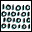
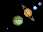

Appendix 1b: Solar System Data 2
See below for a key to the columns.
Physical Data
Radius Mass Rotate Dimensions
Name (km) (kg) Dens Abo Vo (days) (km)
--------- ------- ------- ---- --- ----- ------ ----------
Sun 695000 1.99e30 1.41 ? -26. 24.6
Mercury 2440 3.30e23 5.43 .11 -1.9 58.6
Venus 6052 4.87e24 5.24 .65 -4.4 -243
Earth 6378 5.97e24 5.52 .30 - 0.99
Mars 3397 6.42e23 3.93 .15 -2.0 1.03
Jupiter 71492 1.90e27 1.33 .52 -2.7 0.41
Saturn 60268 5.68e26 0.69 .47 0.7 0.45
Uranus 25559 8.68e25 1.32 .51 5.5 -0.72
Neptune 24766 1.02e26 1.64 .41 7.8 0.67
Pluto 1150 1.27e22 2.06 .55 13.6 -6.39 (z)
Moon 1738 7.35e22 3.34 .12 -12.7 S
Phobos 11 1.08e16 1.9 .06 11.3 S 13.5 x 10.8 x 9.4
Deimos 6 1.80e15 1.8 .07 12.3 S 7.5 x 6.1 x 5.5
Metis 20 9.56e16 2.8 .05 17.5 ?
Adrastea 10 1.91e16 4.5 .05 18.7 ? 12.5 x 10 x 7.5
Amalthea 94 3.5 e18 1. .05 14.1 S 135 x 83 x 75
Thebe 50 7.77e17 1.5 .05 16.0 S 55 x 45
Io 1821 8.93e22 3.53 .61 5.0 S
Europa 1565 4.80e22 2.99 .64 5.3 S
Ganymede 2634 1.48e23 1.94 .42 4.6 S
Callisto 2403 1.08e23 1.85 .20 5.6 S
Leda 8 5.68e15 2.7 ? 20.2 ?
Himalia 93 9.56e18 2.8 ? 15.0 0.4
Lysithea 18 7.77e16 3.1 ? 18.2 ?
Elara 38 7.77e17 3.3 ? 16.6 0.5
Ananke 15 3.82e16 2.7 ? 18.9 ?
Carme 20 9.56e16 2.8 ? 17.9 ?
Pasiphae 25 1.91e17 2.9 ? 16.9 ?
Sinope 18 7.77e16 3.1 ? 18.0 ?
Pan 10 ? ? .5 ? ?
Atlas 15 ? ? .9 18.0 ? 20 x 10
Prometheus 46 2.70e17 0.7 .6 15.8 ? 72 x 43 x 32
Pandora 42 2.20e17 0.7 .9 16.5 ? 57 x 42 x 31
Epimetheus 57 5.59e17 0.6 .8 15.7 S 69 x 55 x 55
Janus 89 1.98e18 0.65 .8 14.5 S 99 x 96 x 76
Mimas 199 3.75e19 1.14 .5 12.9 S
Enceladus 249 7.30e19 1.12 .99 11.7 S
Tethys 530 6.22e20 1.00 .9 10.2 S
Telesto 15 ? ? .5 18.7 ? 17 x 14 x 13
Calypso 13 ? ? .6 19.0 ? 17 x 11 x 11
Dione 560 1.05e21 1.44 .7 10.4 S
Helene 16 ? ? .7 18.4 ? 18 x 16 x 15
Rhea 764 2.31e21 1.24 .7 9.7 S
Titan 2575 1.35e23 1.88 .21 8.3 S
Hyperion 143 1.77e19 1.4 .3 14.2 chaotic 185 x 140 x 113
Iapetus 718 1.59e21 1.02 .2 11.1 S (y)
Phoebe 110 1.6 .06 16.5 0.4 115 x 110 x 105
Cordelia 13 ? ? .07 24.0 ?
Ophelia 16 ? ? .07 24.0 ?
Bianca 22 ? ? .07 23.0 ?
Cressida 33 ? ? .07 22.0 ?
Desdemona 29 ? ? .07 22.0 ?
Juliet 42 ? ? .07 22.0 ?
Portia 55 ? ? .07 21.0 ?
Rosalind 27 ? ? .07 22.0 ?
Belinda 34 ? ? .07 22.0 ?
Puck 77 ? ? .07 20.0 ?
Miranda 236 6.59e19 1.20 .27 16.5 S 240 x 234 x 233
Ariel 581 1.35e21 1.67 .34 14.4 S 581 x 578 x 578
Umbriel 585 1.17e21 1.40 .18 15.3 S
Titania 789 3.53e21 1.71 .27 14.0 S
Oberon 761 3.01e21 1.63 .24 14.2 S
Caliban 40 .07 21.9
Stephano 15 .07 24.3
Sycorax 80 .07 20.4
Prospero 20 .07 23.2
Setebos 20 .07 23.3
Naiad 29 ? ? .06 25.0 ?
Thalassa 40 ? ? .06 24.0 ?
Despina 74 ? ? .06 23.0 ?
Galatea 79 ? ? .06 23.0 ?
Larissa 96 ? ? .06 21.0 ? 104 x 89
Proteus 209 ? ? .06 20.0 ? 218 x 208 x 201
Triton 1353 2.15e22 2.05 .7 13.6 S
Nereid 170 ? ? .2 18.7 ?
Charon 586 1.90e21 2.24 .32 15.5 S (z)
Key:
Radius Equatorial radius in km (highly uncertain for the small outer solar system moons)
Mass in kilograms including atmospheres but not satellites.
Dens Density in g/cm3.
Abo Object's geometric albedo.
Vo Object's magnitude in visible light at opposition.
Rotate Sidereal period of equatorial rotation in days (negative=retrograde; S=synchronous).
Dimensions Radii for non-spherical bodies.
Notes:
(y) Iapetus' magnitude varies from 10.2 to 11.9
(z) the masses, radii and densities of Pluto and Charon are still somewhat uncertain
( ) Some of the data above is given to more decimal places than it should be.
Much more accurate and detailed data is available from JPL's Horizons telnet interface and their web site

... Appendices
... Orbital
... Physical
... Misc
... Extrema
... 
Bill Arnett; last updated:
2004 Jun 28